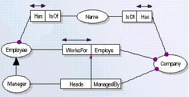

Modeling Business rules is not an easy task, and mostly requires the business modeler to be an IT professional and domain expert at the same time. ORM offers great capabilities and expressiveness in modeling business rules graphically, and in a way similar to natural language. In this way, business modelers can then see the verbalizations of their models. Such verbalized models are easy to be checked and corrected by non IT experts. see example , see multilingual verbalization or ORM Schemes.
The idea in this proposal, is to build an editor that helps for modeling the business rules in pseudo natural language (i.e fixed syntax statements) see the example, and then convert them into ORM. The student will not start from scratch, but will use the tool and the verbalization system that we have built already (at STAR Lab). For storing ORM rules in this system we've developed a conceptual markup language called ORM-ML.
Once the editor is finished, the user should be able to create some concepts, and to write ORM-ML rules in the form of pseudo NL sentences, according to some fixed syntax. For instance: EACH <concept> <role> AT LEAST ONE <concept>, which is mandatory constraint. This is comparable to the Authorete tool from Haley (see http://www.haley.com ).
This idea could be extended in a thesis, in which the you allow many modeling templates (e.g. sentence analysis), or you may explore the need for maybe other constraints for modeling commitments to ontologies, than those defined in ORM-ML.
Research issues (only for thesis): sentence analyses, decision tables,
modalities, business rules.
Skills: Java, ORM-ML.
See: Related
proposals.
Given the following business model, represented graphically in ORM, a pseudo natural language verbalization is possible, see below.

Verbalization :
The Verbalization are two separated parts, one is the elementary facts as in table1, and the second is the constraints (we refer to them as business rules or domain rules), see table 2.
| Table 1: Elementary Facts |
Table 2: domain Rules |
|||
| Employee | Has | Name | Each Employee Has at most one Name | |
| Employee | Works For | Company | Each Employee Works For at most one Company | |
| Manager | Is a | Employee | Each Employee Works For at most one Company | |
| Manager | Heads | Company | Each Employee Has at least one Name | |
| Company | Has | Name | Each Company Has at most one Name | |
| Company | Managed By | Manager | Each Company Has at least one Name | |
| Company | Employees | Employee | Each Company Employees at least one Employee | |
| Company | Synonym Of | Business Party | Each Company Managed By at least one Manager | |
| Business Party | Synonym Of | Company | Each Company Managed By at least one Manager | |
| Name | Is Of | Company | Each Manager who Heads a Company must also Works For that Company | |
| Name | Is Of | Employee | ||
------------------------------------------------------
Business Rules: are used to represent certain aspects of a business domain (static rules) or business policy (dynamic rules). Business rules are defined in [FR95] as “statements that define or constrain some business aspects. They are intended to assert business or to control or influence its behavior”.